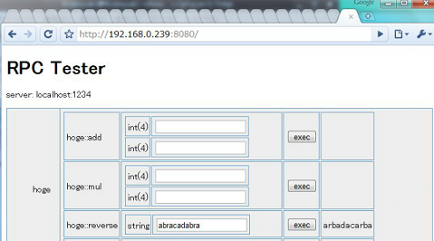

pficommonと
MessagePack-RPC
田中英行 tanakh@preferred.jp
2011/11/07
田中英行 tanakh@preferred.jp
2011/11/07


モダンなC++コードを書くためのライブラリ
etc...
並行プログラミングのためのライブラリ
メモリバリア
pfi::concurrent::mvar<int> m;
void foo()
{
m.put(123);
}
int main()
{
pfi::concurrent::thread t(&foo);
t.start();
cout << m.take() << endl;
return 0;
}ネットワークプログラミングのためのライブラリ
RPC
low-levelな実装
int main()
{
stream_socket sock;
sock.connect("tanakh.jp", 80);
sock.puts("GET /rss.xml HTTP/1.0\r\n\r\n");
sock.flush();
string line;
while (sock.getline(line))
cout << line << endl;
}ソケットストリームを利用
int main()
{
soocketstream ss("tanakh.jp", 80);
if (!ss) return 1; // cannot connect
ss << "GET /rss.xml HTTP/1.0\r\n\r\n" << flush;
for (string line; getline(ss, line); )
cout << line << endl;
}int main()
{
server_socket ssock;
ssock.create(8888);
for (; ;) {
socketstream ss(ssock.accept());
for (string line; getline(ss, line); )
ss << line;
}
return 0;
}HTTPライブラリ
int main()
{
pfi::network::http::request req("GET", uri("http://tanakh.jp/"), 1, 1);
shared_ptr<stream_socket> ss(new stream_socket());
ss->connect("tanakh.jp", 80);
req.send(ss);
pfi::network::http::response resp(ss);
for (string line; getline(resp.body(), line); )
cout<<line<<endl;
return 0;
}RPC_PROC(add, int(int, int)) // method-def
RPC_PROC(hello, string(string)) // method-def
RPC_GEN(0 /* VERSION */, test, add, hello) // gen server, clientint add(int x, int y){ return x + y; }
string hello(string s)
{
return "Hello, " + s;
}
int main()
{
test_server serv;
serv.set_add(&add);
serv.set_hello(&hello);
serv.serv(12345, 10); // port-num, thread-num
}int main()
{
test_client cli("localhost", 12345); // host, port-num
cout << cli.call_add(123, 456) << endl; // => 579
cout << cli.call_hello("World!") << endl; // => Hello, World!
}$ genrpc --php rpc.h（いまのところPHPとHaskellだけ）
class my_cgi : public cgi {
public:
void run(ostream &os){
// implementation...
head["Content-Type"] = "text/plain";
os << "Hello, " << query["name"] << endl;
}
};
int main()
{
// run as a CGI
run_cgi(my_cgi()).run();
}class my_cgi : public xhtml_cgi {
public:
void run() {
html__ {
head__
title__
text__("Hoge Hoge Page");
body__ {
a__ { href__ = "http://tanakh.jp";
text__("hoge-");
}
br__;
}
}
}
};fcgiとして実行
int main()
{
run_fcgi(my_cgi()).run();
}Standaloneサーバとして実行
int main()
{
run_server(my_cgi(), port_number /* = 8080 */,
thread_num /* = 1 */, timeout /* = 10 */).start();
}class hoge {
public:
hoge() {}
private:
friend class pfi::data::serialization::access;
template <class Ar>
void serialize(Ar &ar) {
ar & a & s;
}
int a;
string s;
};struct hoge {
template <class Ar> void serialize(Ar &ar) {
ar & MEMBER(a) & MEMBER(b);
}
string a;
vector<int> b;
};
int main()
{
shared_ptr<type_rep> typ = get_type<hoge>();
typ->print(cout); // => class(){string:a,array<int(4)>:b}
return 0;
}
int main()
{
shared_ptr<connection>
conn(mysql::connect("localhost", 3306, "dbname", "user", "passwd"));
transaction(conn) { // auto commit if success, otherwise rollback.
shared_ptr<statement>
stat(conn->prepare("SELECT * from hoge where bar > ?"));
stat->execute(3.14);
string name; int val;
while (stat->fetch_row(name, val)){ ... }
conn->run("INSERT INTO hoge (foo, bar) VALUES (?, ?)",
"test", 1.23);
}
}struct foo {
int a;
string b;
template <class Archive> void serialize(Archive &ar) {
ar & MEMBER(a) & MEMBER(b) & MEMBER(c);
}
};
int main()
{
foo f; f.a = 123; f.b = "test";
cout << to_json(f) << endl; // => { "a": 123, "b": "test" }
}
MPRPC_PROC(add, int(int, int)) // method def
MPRPC_PROC(hello, string(string)) // method def
MPRPC_GEN(0 /* VERSION */, test /* NAME */,
add, hello) // METHODSIt is now open source! You can try it:
$ git clone git://github.com/pfi/pficommon.git
$ cd pficommon
$ ./waf configure
$ ./waf build
$ sudo ./waf install
ご清聴ありがとうございました